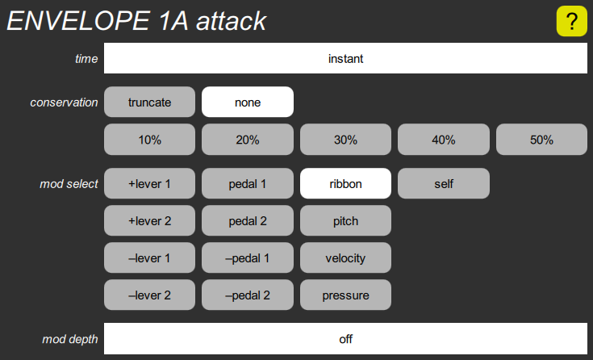

ENVELOPE attack cluster

This contains a time slider to set the time it takes for the envelope to rise to its peak. The mod select buttons and mod depth slider allow the attack time to be modulated by either lever or pedal, the note pitch, the velocity, or the optional pressure sensor. It can also be modulated by its own value, which changes the shape of the attack curve. Positive modulation increases the attack time, negative modulation decreases it.
This also includes the conservation parameter, which determines how much of the previous note’s leftover envelope is added to the amplitude of the new envelope when a note is retriggered. It has six choices, from none to 50%, where the higher settings cause the envelope amplitude to grow with each restrike (but still limited to two units). The “truncate” setting does the opposite, forcing the envelope to zero at the start of each note.